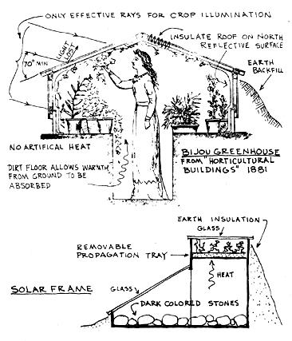
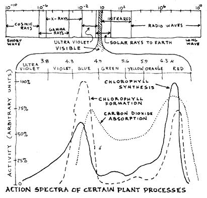
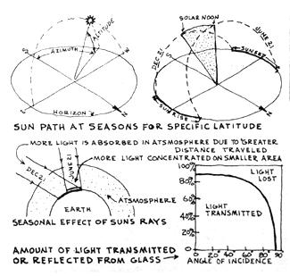
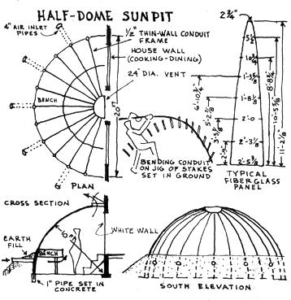
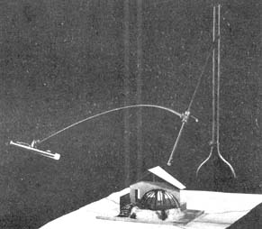
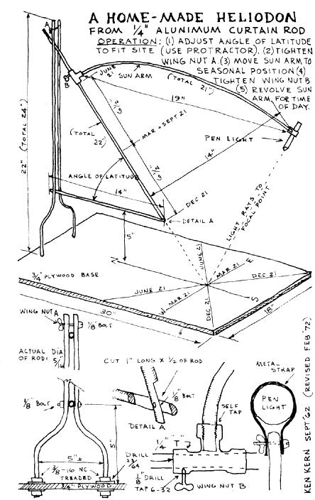

There's an ancient Persian proverb that says, "When you understand how to do a thing, the doing is easy; if you find it difficult you do not understand it." There are of course numerous homestead activities where a basic understanding can make the difference-not only between making a thing simple or difficult, but between a gratifying success or disheartening failure. And nowhere on the homestead is this dichotomy more evident than when one attempts to modify plant environment by the use of a forcing structure.
Some types of plant shelter are simple and easily understood; a shade or windbreak screen, an arbor or even a cold frame are rational structures requiring minimum knowledge to construct and manage. But it's a different ball game when a homesteader attempts to modify plant environment in a greenhouse situation.
A greenhouse is something more than a sun trap and a light trap for the benefit of plant growth; it's complexity lies in the fact that plant forcing, itself, is a highly complicated affair. In a greenhouse there exists a so-called trinity of plant ecology, which necessitates a balance between light (heat), moving air, and controlled humidity. Temperature, first of all, affects plant growth because it directly influences such internal processes as photosynthesis (food manufacture). Plant growth also requires respiration - which is energy generated by the breaking down of foods manufactured by the plant. Now to illustrate how this trinity principle works: during the day, sunlight promotes plant growth through photosynthesis; plants absorb light energy to reduce carbon dioxide in the air to sugar. High daytime temperatures require high relative humidity and high soil moisture to balance the increased water loss through the plant. We see here that the plant environment includes not only the vegetative - above ground - considerations such as temperature, humidity, radiation, air movement and gas content of the air. There is also the root environment to consider: root temperature, soil moisture, plant nutrients, and soil structure. And there is yet another complication: not only do different plants require different environments, but the nighttime factors are different from the daytime. At night photosynthesis stops and reactions associated with reproduction occur. A low temperature at night produces growth, flowers and fruit.
Much of my understanding and appreciation of greenhouse functions grew out of a brief 1957 visit with F.W. Went, then director of the Earhart Plant Research Laboratory in Pasadena. Through lengthy and painstaking experiments, Went found optimal temperature and humidity requirements. Tomatoes, for instance, require an optimal daytime temperature of 80 to 90 degrees Fahrenheit, nighttime 65 degrees F. The optimal daytime humidity was found to be 50 to 80%, nighttime 95%. Went's findings proved important to the furtherance of plant growth knowledge - it also pointed to some obvious inefficiencies of conventional greenhouse design.
The "greenhouse effect" is an expression which applies to a building having excessive radiation buildup. As one would suspect, greenhouses are troubled with "greenhouse effect" . . . so is our atmosphere. Atmospheric vapor filters shortwave solar radiation (ultraviolet). Water vapor, however, is transparent to visible light, which warms the earth and re-radiates longwave (infrared) rays back to the atmosphere. Some of this infrared heat is absorbed by the atmosphere, and some is reflected back to earth. The earth's atmosphere acts like glass in a greenhouse: opaque to longwave but transparent to shortwave radiation. In a greenhouse situation this effect works in much the same fashion: the ground and vegetation inside are heated by the transmission of ultraviolet rays from the sun. These contents then give off heat in the form of infrared radiation. Window glass, however, will not allow these longwave radiations to escape so they are retained (to the actual detriment of the vegetation inside).
Heating from strong radiation reduces the nighttime humidity of the air when a high water-saturation is especially needed. Artificial heating also tends to lower the relative humidity. Went overcame these obstacles in his experimental greenhouses by employing elaborate, highly sophisticated, artificial conditioning devices. These methods are of course not available - nor even desirable - for homestead greenhouse production. A better home-grown solution is to design a greenhouse structure that provides optimum growing conditions.
A little greenhouse research reveals the fact that, although Washington and Jefferson both had greenhouses, the oldest reported forcing structure in the U.S. was not a greenhouse as we know it today. It was, rather, a pit covered with glass on the south side, and earth insulation on the north. This so-called pit greenhouse was built into the side of a Waltham, Massachusetts hill about 1800. I found that the pit greenhouse is practically unknown among horticultural circles, yet it proves to be a far more sensible, economical, and efficient forcing structure.
In principle the sun pit is an "unheated" greenhouse. That is, it relies entirely upon solar and ground heat rather than auxiliary furnaces - which are always required in conventional greenhouses.
Soon after learning of Went's greenhouse research I had occasion to include an unheated pit greenhouse into a rambling, adobe ranch house designed for the Morgan Washburn family in Oakhurst. About the only unique feature of this greenhouse (besides the obvious pit-heating effect) was its incorporation as an important annex to the house; one could stand in the kitchen and pick salads from the greenhouse bench.
Tom Powell featured the Washburn greenhouse in an article for ORGANIC GARDENING AND FARMING magazine (January 1959), and notoriety from this item helped to initiate me into an expanding fraternity of greenhouse freaks - designers, builders and growers. For the next ten years I amassed an impressive working knowledge and greenhouse construction experience. I found greenhouse enthusiasts to be, on the most part, exciting and imaginative people. Witness the Nearing 9 by 18 sun pit, which Helen and Scott kept active all year in Vermont: tomatoes and peppers were grown through the summer months; Chinese cabbage, celery, parsley and chives all winter - with no supplemental heat!
There are both ephemeral cranks and foremost representatives of science involved in the study of forcing plants in artificial stricture. Sometimes the sifting out of the true and beautiful is not all that easy; even the scientific opinion raises questions and problems that seem unanswerable in our lifetime. But there is much of this information that can be used to advantage by today's homestead builder. Are you ready?
Let's begin again with light and heat. To function properly, a greenhouse requires maximum light. But admitting desirable light also admits a possibly excessive and undesirable temperature buildup. High temperature causes plant respiration which tends to disturb the metabolic process. It is the infrared - the heat - region of the solar spectrum that causes this temperature increase. The greenhouse operator who customarily paints whitewash on the glass for shade, thereby reducing entry of shortwave rays, is sensitive to plant respiration. Opaque shading is a shortsighted solution, however, because the balance of light rays (fully onehalf of the rays) is thereby inhibited on the other end of the spectrum, restricting the narrow ultraviolet (shortwave) rays.
The "greenhouse effect" also takes place as a result of faulty (e.g., standard) greenhouse design. As the contents of a greenhouse are heated, this interior heat is given off in the form of infrared radiation. Though given off, the heat never leaves the greenhouse: window glass does not transmit longwave infrared radiation. Heat consequently builds up inside, and plants "burn". Furthermore, window glass admits only about 5% of the ultraviolet rays, which really makes glass a health hazard for man as well as for plants. Ultraviolet radiation controls bacterial and viral populations, and when the rays are filtered out upper respiratory troubles are apt to occur, especially during winter months in cold climates.
The obvious solution here is to use a type of translucent material which admits the maximum amount of light, and maximum quantity of ultraviolet radiation and the minimum degree of infrared intensification. Fiberglass plastics meet these specifications: as much as 95% of the ultraviolet rays are admitted (as against 5% for window glass). Glass fibers and crinkled surfaces diffuse infrared heat rays, making this material almost a perfect solution for greenhouse coverings.
Light, as we have seen above, is the energizer for the primary growing process known as photosynthesis. The "white" light visible in the ultraviolet range of wavelength is actually made up of tones of violet, blue, green, yellow, orange and red; light projected through a prism will demonstrate this range of color. Scientists have for a long time been interested in the ultraviolet waves, known also as actinic rays. In fact, early Egyptians treated various diseases by exposing patients to the sun rays filtered through a blue quartz lens. Actinic rays are known as decomposing, or chemical rays, of the sun. They penetrate through solid matter and are thought to have the power of setting up a vibration, which, in matter that is susceptible to it, sets up a counter vibration.
Some of the actinic rays that shine through chlorophyll are absorbed. From plant-growing research that extends to 1880, we know that in photosynthesis, plants use more light from the blue and red parts of the spectrum. Little use is made of green, yellow, or other actinic nays . . . in fact, violet rays actually inhibit plant growth.
The accompanying graph was compiled from research data supplied in part by the Philips Research Laboratory, Eindhoven, Netherlands. Three processes are illustrated: carbon dioxide absorption, chlorophyll formation, and chlorophyll synthesis (photosynthesis). Carbon dioxide is absorbed into the plant through the stomata, located in the epidermis of leaves (oxygen is also transpired through the stomata). Stomata open under the influence of light, and are more widely open in the presence of blue light than either red or green. Evaporation and photosynthesis are intensified and chlorophyll production is accelerated when exposed to blue light.
Those of us living in mountainous apple country can testify to the effect that light plays in producing red pigment (anthocyanin) in apples. Ample amounts of late summer sunshine produce redder apples. A simple experiment can be performed to demonstrate the effect blue light has in producing anthocyanin: using a simple prism, project a solar spectrum on a green apple. The only part of the apple that will turn red is that in the blue and nearly ultraviolet end of the spectrum.
One greenhouse manufacturer (Lifelite Corporation, Concord, Calif.) promotes a bluish-red film colorant to absorb ultraviolet and green wavelengths. Red wavelengths are shifted and intensified. These self-adhering sheets can be used as reflectors from indoor fluorescent units, or on outdoor greenhouse panels. The degree of chlorophyll absorption under the influence of red light is significant, as illustrated in accompanying graph.
I have yet to find a viable explanation of what actually takes place when actinic rays are absorbed in chlorophyll. It must certainly have something to do with cellular decomposition. Growth equals decay, remember?
Physicians who employ color therapy explain the principles as far as the human body is concerned: the absorptive quality of actinic rays has the faculty of starting every nerve cell in the body into active vibration. This vibration stimulates into action the proper interchange of fluids in the cells of the muscular structure, thus promoting cellular subdivision and new formation. Actinic rays affect chemical blood composition more than anything else. Blood, of course, repairs all illness: all waste matter is swept out through blood circulation. Color, supposedly, has a definite oscillatory frequency which corresponds to a similar oscillation in one or more of our body organs.
Dr. Dinshah Ghadiali, founder of the Spectro-Chrome Institute, Malaga, New Jersey, and inventor of the one-time controversial "Spectro-Chrome Metry" equipment for localized color treatment, claims that all fevers are caused by an excess of the chemical elements hydrogen and carbon. These elements are localized by the use of his special equipment: red and yellow attuned color waves seem to be present. Oxygen is necessary to eliminate the hydrogen and carbon elements. In fever, the respiration does increase, giving a larger intake of oxygen, which converts the hydrogen into water and the carbon into carbon dioxide, both of which are excreted. Oxygen "burns" out the hydrogen and carbon. It is made more available to the body through the single attuned color wave of blue.
Kate Baldwin, M.D., F.A.C.S., former Senior Surgeon, Woman's Hospital, Philadelphia, says the following about the therapeutic value of light and color (as quoted from Atlantic Medical Journal, April 1927):
For about six years I have given close attention to the action of colors in restoring the body functions, and I am perfectly honest in saying that, after nearly thirty-six years of active hospital and private practice in medicine and surgery, I can produce quicker and more accurate results with colors than with any or all other methods combined . . . and with less strain on the patient. In many cases, the functions have been restored after the classical remedies have failed.
In about 1900, Arthur Schuster, Professor of Physics at the University of Manchester, worked on a lamp that would simulate actinic rays for the treatment of human disease. It took 12 years for him to perfect the quartz lamp with a side band of the actinic ray sufficient for therapeutic use. The quartz lamp is used today by some physicians. Treatment is not pleasant but results are said to be outstanding.
Several years ago I had occasion to build an experimental greenhouse for the McCoy family in Oakhurst. In one section of the greenhouse we used blue-tint fiberglass panels. Results from the use of blue fiberglass were immediately apparent: the growth rate increased, the plant fiber strengthened, yields were greater and the taste of vegetables improved. The McCoy experience fully substantiated the blue-glass theories postulated a hundred years ago by General A.J. Pleasonton. In 1861, this inventive genius built a 26-foot by 84-foot greenhouse with every eighth row of blue-colored glass. His results were rather astonishing (as reported in his book, THE INFLUENCE OF THE BLUE RAY OF THE SUNLIGHT AND THE BLUE COLOUR OF THE SKY, In Developing Animal and Vegetable Life, In Arresting Disease, and In Restoring Health in Acute and Chronic Disorders to Human and Domestic Animals; Philadelphia, 1876).
At the end of five months the grapevines in his greenhouse produced 1,200 pounds of fruit; growth reached 45-foot lengths, with stems 1 inch in diameter. Consider his explanation for this fabulous yield:
That blue light of the firmament, if not itself electro-magnetism, evolves those forces which compose it in our atmosphere, and applying them at the season, viz, the early spring, when the sky is bluest, stimulates, after the torpor of winter, the active energies of, the vegetable kingdom, by the decomposition of its carbonic acid gas-supplying carbon for the plants and oxygen to mature it, and to complete its mission.
In a second experiment, General Pleasonton introduced diseased livestock in a greenhouse which had equal proportions of white and blue glass. After a short while the animals regained their health and increased remarkably in weight. After much experimentation he found that an 8-to-1 proportion of white to blue glass would be used in vegetable production, and a 1-to-1 proportion for animals.
Interested readers might refer to the patent that General Pleasonton fled, IMPROVEMENT IN ACCELERATING THE GROWTH OF PLANTS AND ANIMALS, September 26, 1871, No. 119,242. The following is taken from the original patent:
. . . combining the natural light of the sun transmitted through transparent glass with the natural light of the sun transmitted through blue glass or any of the varieties of blue, such as indigo, or violet . . .
I do not pretend to be the first discoverer of the vitalizing and life-growing qualities of the transmitted blue light of the solar rays, and its effect in quickening life and intensifying vitality.
I have found, upon patient and long experiments, running through many years, that plants, fruits of plants, vines and fruits of vines and vegetables so housed and enclosed as to emit the natural light of ties sun through ordinary glass, and the transmitted light of the solar rays through the glasses of blue, violet or purple colours in the proportion of eight of natural light to one of the blue or electric light light, grow much more rapidly, ripen much quicker, and produce much larger crops of fruit than the same plants housed and treated with the natural light of day, the soils and fertilizers and treatment and culture being identical in both cases and the exposure the same.
I have also discovered, by experiment and practice, special and specific efficacy in the use of this combination of the caloric rays of the sun and the electric blue light in stimulating the glands of the body, the nervous system generally, and the secretive organs of man and animal. It therefore becomes an important element in the treatment of diseases, especially such as have become chronic or result from derangement of the secretive, perspiratory or glandular functions as it vitalizes and gives renewed activity and force to the vital currents that keep the health unimpaired, or restores them when disordered or deranged.
Greenhouse experts, like gardening experts, are never in agreement as as to proper direction to orient the structure or to plant the crops. A southwest exposure may provide more light, but in the afternoon the energy of the plant has started to wane. So actually a southeast exposure is best, as the morning hours for a plant are most productive. Of greater importance than orientation is the slope of greenhouse walls; the amount of fight transmitted or reflected depends upon the angle that the light beans makes with the greenhouse wall. The angle of incidence should not be less than 70 degrees. Some solar heating engineers use the formula "Latitude + 13 degrees = angle of glass to horizon" to get maximum winter penetration and maximum summer reflection.
About 50% of the total sunlight striking a greenhouse is dissipated. This loss can be reduced considerably by reflecting the light from the southern half of the sky against a north-facing wall. This north wall should have a smooth white surface for maximum reflection. And of course this north wall should be properly insulated. From my accompanying drawings it becomes clear that the ideal greenhouse should have a dome shape, cut vertically along an east-west line.
My half-dome sun pit greenhouse was designed to meet theoretical solar conditions-both from the standpoint of maximum mid-winter absorption and mid-summer reflection of the sun's rays. The accompanying drawing illustrates some of these solar considerations, and how they might influence greenhouse design. As shown, the noontime altitude of the sun gives only a minor part of necessary design criteria; among other things one needs to know the azimuth angles. And of course these sun angles vary according to latitude, north or south of the equator.
So following theoretical considerations, the practical approach to homestead greenhouse design is to build a scale model and investigate the yearly sun path with a heliodon. A heliodon is simply a simulated sun machine. It gives an accurate solar account for any time of the day, at any season of the year, for any specific latitude.
The heliodon that I have used in the past (mostly in conjunction with architectural models) was recently revised so large-size three-dimensional homestead layouts could be designed and analyzed. I also simplified the fabrication, to make it feasible for any homesteader-builder to have his very own. With this machine, one can determine optimum building location and orientation, roof overhang and window placement. It is especially valuable for locating new trees-shade tree size and positioning, in particular. The solar effect on every homestead building can be immediately perceived, as with garden, fields, wood lot, and general land topography. All of this contributes to that all-important, number-one factor of homestead planning: make your mistakes on paper.
|
 |
 |
 |
|
 |
 |
 |